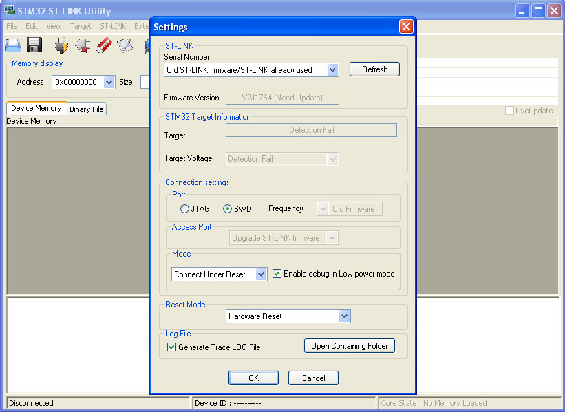
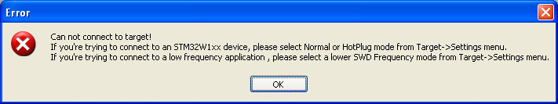
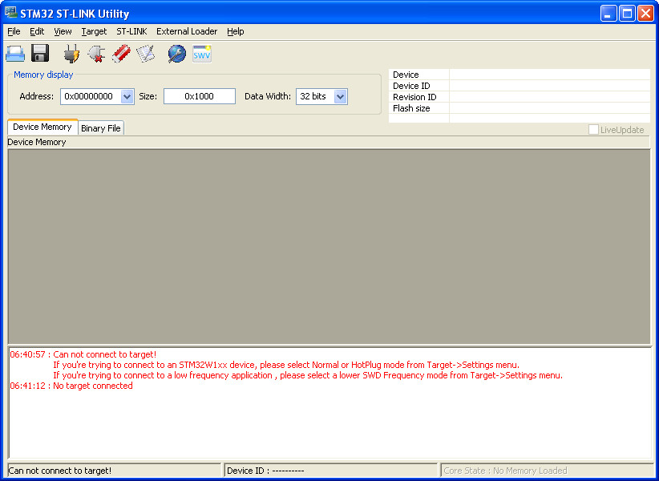
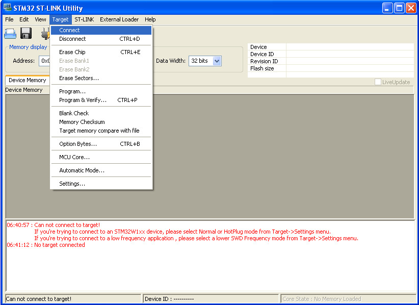
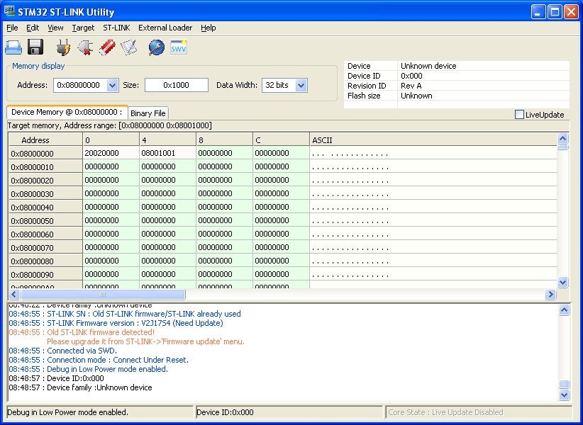
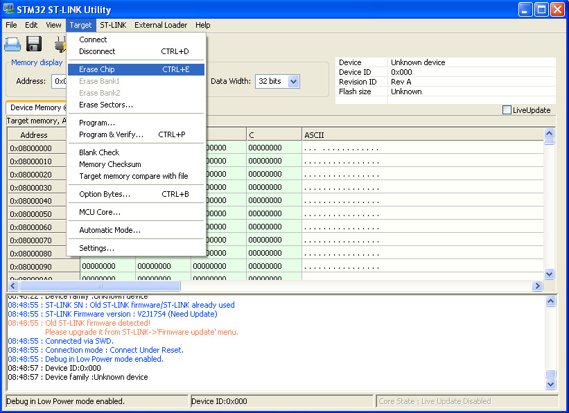
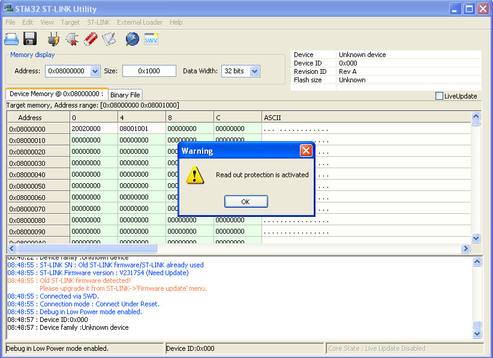

Steward
分享是一種喜悅、更是一種幸福
掌機 - Game & Watch: Super Mario Bros. - 解決Error: init mode failed (unable to connect to the target)問題
參考資訊：
https://stackoverflow.com/questions/57628401/eclipse-error-init-mode-failed-unable-to-connect-to-the-target
問題如下：
openocd -f main.cfg -c "init; halt; program main.elf; reset; exit;" Open On-Chip Debugger 0.11.0-rc1+dev-00010-gc69b4deae-dirty (2020-12-27-01:20) Licensed under GNU GPL v2 For bug reports, read http://openocd.org/doc/doxygen/bugs.html Info : The selected transport took over low-level target control. The results might differ compared to plain JTAG/SWD none separate Info : clock speed 1800 kHz Info : STLINK V2J17S4 (API v2) VID:PID 0483:3748 Info : Target voltage: 3.201569 Error: init mode failed (unable to connect to the target) make: *** [Makefile:6: flash] Error 1
P.S. 原因是錯誤配置SWD腳位或者CPU已經掛點(超頻)
解法如下：
1. 斷開電池
2. ST-LINK V2重新拔插
3. 開啟STM32 ST-LINK Utility並且配置成Connect Under Reset

4. 按下確定後，出現的錯誤，忽略即可

5. 顯示的錯誤，忽略即可

6. 把MCU Reset腳位接到GND，接著按下Connect

7. 三秒後，斷開MCU Reset與GND的連接，ST-LINK V2即可連線成功

8. Erase Chip

9. 顯示錯誤，忽略即可

10. 接著就可以使用openocd燒錄
openocd -f main.cfg -c "init; halt; program main.elf; reset; exit;" Open On-Chip Debugger 0.11.0-rc1+dev-00010-gc69b4deae-dirty (2020-12-27-01:20) Licensed under GNU GPL v2 For bug reports, read http://openocd.org/doc/doxygen/bugs.html Info : The selected transport took over low-level target control. The results might differ compared to plain JTAG/SWD none separate Info : clock speed 1800 kHz Info : STLINK V2J17S4 (API v2) VID:PID 0483:3748 Info : Target voltage: 3.189556 Info : stm32h7x.cpu0: hardware has 8 breakpoints, 4 watchpoints Info : starting gdb server for stm32h7x.cpu0 on 3333 Info : Listening on port 3333 for gdb connections target halted due to debug-request, current mode: Thread xPSR: 0x01000000 pc: 0x08000008 msp: 0x20020000 ** Programming Started ** Info : Device: STM32H7Ax/7Bx Info : STM32H7 flash has dual banks Info : Bank (0) size is 1024 kb, base address is 0x08000000 Warn : Adding extra erase range, 0x08000080 .. 0x08001fff ** Programming Finished **
假如沒有做Erase Chip的動作，則會顯示如下錯誤
openocd -f main.cfg -c "init; halt; program main.elf; reset; exit;" Open On-Chip Debugger 0.11.0-rc1+dev-00010-gc69b4deae-dirty (2020-12-27-01:20) Licensed under GNU GPL v2 For bug reports, read http://openocd.org/doc/doxygen/bugs.html Info : The selected transport took over low-level target control. The results might differ compared to plain JTAG/SWD none separate Info : clock speed 1800 kHz Info : STLINK V2J17S4 (API v2) VID:PID 0483:3748 Info : Target voltage: 3.193725 Info : stm32h7x.cpu0: hardware has 8 breakpoints, 4 watchpoints Info : starting gdb server for stm32h7x.cpu0 on 3333 Info : Listening on port 3333 for gdb connections embedded:startup.tcl:530: Error: ** Unable to reset target ** in procedure 'program' in procedure 'program_error' called at file "embedded:startup.tcl", line 567 at file "embedded:startup.tcl", line 530 make: *** [Makefile:6: flash] Error 1